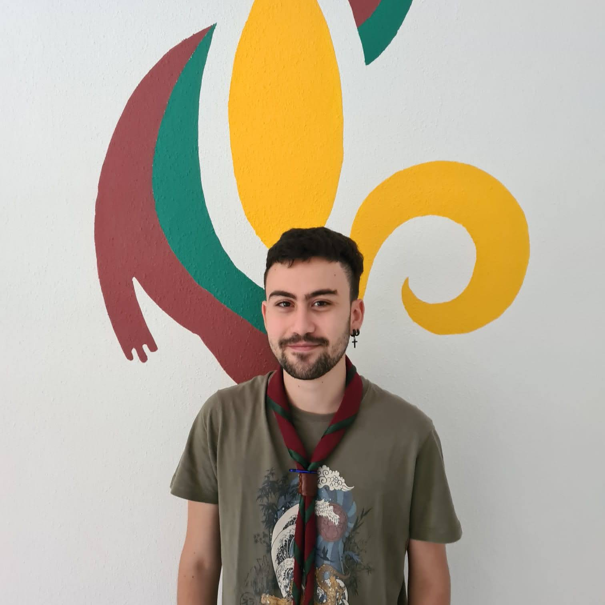
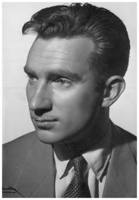
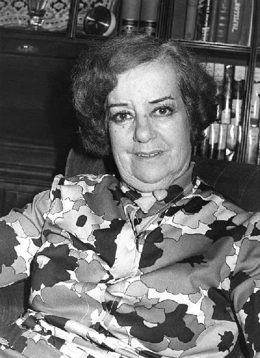
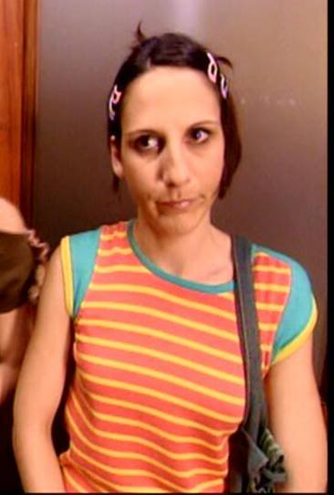
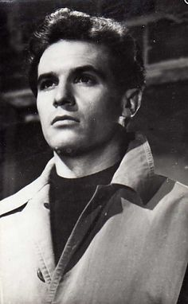
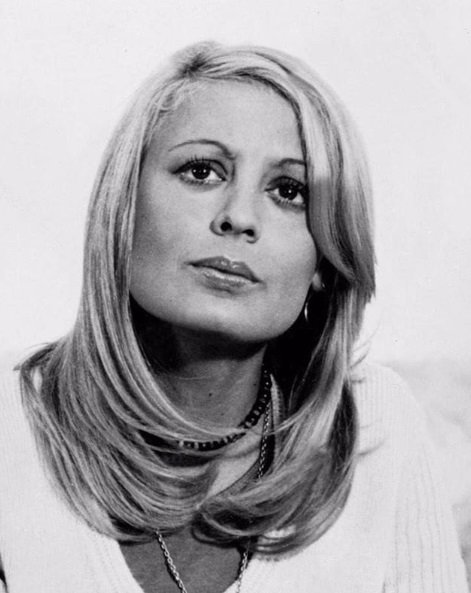

Comentario: Estudiante
Lugar de nacimiento: Oviedo
Fecha de nacimiento: 2000-08-29
Coordenadas: 43.354933 - -5.8514295 - 259.9078972
Comentario: Padre
Lugar de nacimiento: Oviedo
Fecha de nacimiento: 1970-12-11
Coordenadas: 43.363433 - -5.8633631 - 257.1425868

Comentario: Primer universitario
Lugar de nacimiento: Cangas de Onís
Fecha de nacimiento: 1941-07-29
Coordenadas: 43.3507281 - -5.1287966 - 66.3388045

Comentario: Ganadero
Lugar de nacimiento: Helgueras
Fecha de nacimiento: 1916-04-17
Coordenadas: 43.3563116 - -5.1206803 - 199.8421655
Lugar de defuncion: Cangas de Onís
Fecha de defuncion: 1989-02-28
Coordenadas: 43.3507281 - -5.1287966 - 66.3388045
Comentario: Ganadera
Lugar de nacimiento: Celango
Fecha de nacimiento: 1919-12-28
Coordenadas: 43.3567593 - -5.112205 - 299.7768765
Lugar de defuncion: Cangas de Onís
Fecha de defuncion: 1992-11-20
Coordenadas: 43.3507281 - -5.1287966 - 66.3388045

Comentario: Propietaria de una tienda
Lugar de nacimiento: San Juan de Parres
Fecha de nacimiento: 1943-05-13
Coordenadas: 43.3546285 - -5.1478346 - 168.933651

Comentario: Agricultor
Lugar de nacimiento: San Juan de Parres
Fecha de nacimiento: 1918-06-20
Coordenadas: 43.3546285 - -5.1478346 - 168.933651
Lugar de defuncion: San Juan de Parres
Fecha de defuncion: 1948-06-17
Coordenadas: 43.3546285 - -5.1478346 - 168.933651

Comentario: Agricultora
Lugar de nacimiento: San Juan de Parres
Fecha de nacimiento: 1918-01-14
Coordenadas: 43.3539544 - -5.1482913 - 158.8678707
Lugar de defuncion: San Juan de Parres
Fecha de defuncion: 1988-07-24
Coordenadas: 43.3546285 - -5.1478346 - 168.933651
Comentario: Madre
Lugar de nacimiento: Villablino
Fecha de nacimiento: 1972-11-21
Coordenadas: 42.9449357 - -6.3295471 - 1.037.5875016
Comentario: Minero
Lugar de nacimiento: Villablino
Fecha de nacimiento: 1943-09-15
Coordenadas: 42.9449357 - -6.3295471 - 1.037.5875016
Comentario: Minero
Lugar de nacimiento: Villablino
Fecha de nacimiento: 1919-08-06
Coordenadas: 42.9449357 - -6.3295471 - 1.037.5875016
Lugar de defuncion: Villablino
Fecha de defuncion: 2001-04-27
Coordenadas: 42.9449357 - -6.3295471 - 1.037.5875016
Comentario: Madre de tres hijos
Lugar de nacimiento: Llamas de Laciana
Fecha de nacimiento: 1920-10-25
Coordenadas: 42.9285463 - -6.3223696 - 994.4560698

Comentario: Hija única
Lugar de nacimiento: Caboalles de Abajo
Fecha de nacimiento: 1950-07-30
Coordenadas: 42.9521477 - -6.374352 - 1.044.0396361
Comentario: Minero
Lugar de nacimiento: Caboalles de Abajo
Fecha de nacimiento: 1920-02-14
Coordenadas: 42.9526827 - -6.3755552 - 1.054.7566915
Lugar de defuncion: Caboalles de Abajo
Fecha de defuncion: 1979-10-02
Coordenadas: 42.9526827 - -6.3755552 - 1.054.7566915
Comentario: Huérfana de padre
Lugar de nacimiento: Caboalles de Abajo
Fecha de nacimiento: 1917-12-03
Coordenadas: 42.9521477 - -6.374352 - 1.044.0396361
Lugar de defuncion: Caboalles de Abajo
Fecha de defuncion: 1979-10-04
Coordenadas: 42.9526827 - -6.3755552 - 1.054.7566915
